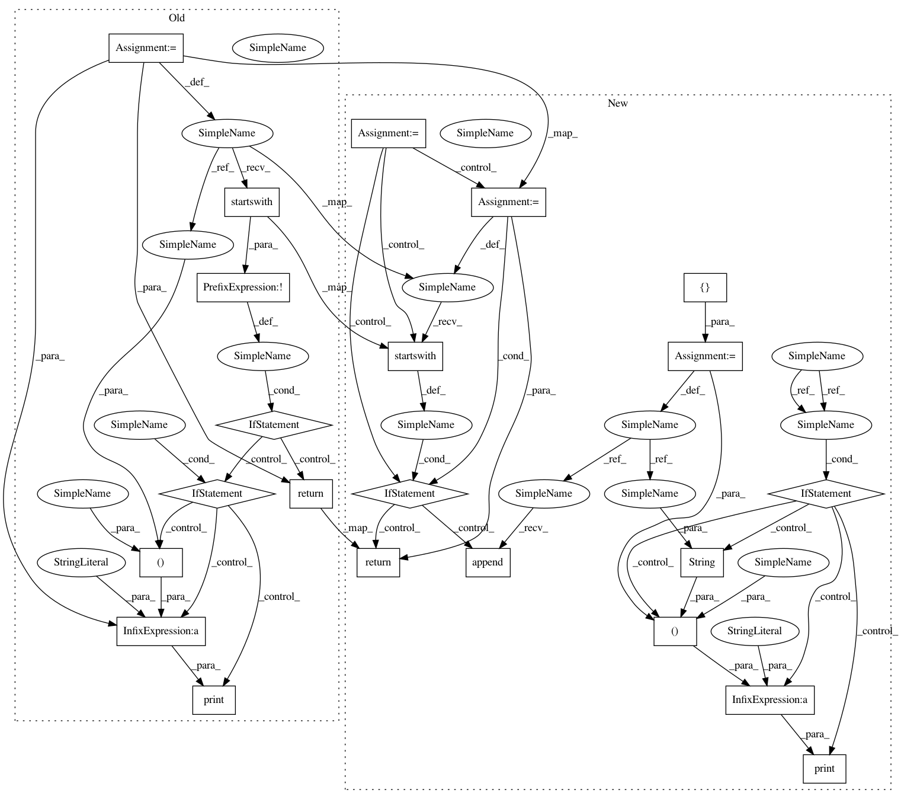

e9527915f88c9495017543a344766189d7412c51,versioneer.py,,versions_from_parentdir,#Any#Any#Any#,430
Before Change
// Source tarballs conventionally unpack into a directory that includes
// both the project name and a version string.
dirname = os.path.basename(root)
if not dirname.startswith(parentdir_prefix):
if verbose:
print("guessing rootdir is "%s", but "%s" doesn"t start with prefix "%s"" %
(root, dirname, parentdir_prefix))
return None
return {"version": dirname[len(parentdir_prefix):], "full": ""}
def do_vcs_install(versionfile_source, ipy):
run_command([GIT, "add", "versioneer.py"])
After Change
the top level of your source tree, next to `setup.py` and the `setup.cfg`
that configures it. This overrides several distutils/setuptools commands to
compute the version when invoked, and changes `setup.py build` and `setup.py
sdist` to replace `_version.py` with a small static file that contains just
the generated version data.
//// Installation
See [INSTALL.md](./INSTALL.md) for detailed installation instructions.
//// Version-String Flavors
Code which uses Versioneer can learn about its version string at runtime by
importing `_version` from your main `__init__.py` file and running the
`get_versions()` function. From the "outside" (e.g. in `setup.py`), you can
import the top-level `versioneer.py` and run `get_versions()`.
Both functions return a dictionary with different flavors of version
information:
* `["version"]`: A condensed version string, rendered using the selected
style. This is the most commonly used value for the project"s version
string. The default "pep440" style yields strings like `0.11`,
`0.11+2.g1076c97`, or `0.11+2.g1076c97.dirty`. See the "Styles" section
In pattern: SUPERPATTERN
Frequency: 3
Non-data size: 22
Instances
Project Name: bokeh/bokeh
Commit Name: e9527915f88c9495017543a344766189d7412c51
Time: 2017-01-11
Author: azpujps@gmail.com
File Name: versioneer.py
Class Name:
Method Name: versions_from_parentdir
Project Name: markovmodel/PyEMMA
Commit Name: f0697e182f4ddb4bbbf853af9328ad61e4ecef02
Time: 2017-11-06
Author: m.scherer@fu-berlin.de
File Name: pyemma/_version.py
Class Name:
Method Name: versions_from_parentdir
Project Name: has2k1/plotnine
Commit Name: 76a3a0f60c1f837ed75e5783b49c241490920edd
Time: 2017-01-28
Author: has2k1@gmail.com
File Name: plotnine/_version.py
Class Name:
Method Name: versions_from_parentdir